40 سؤال
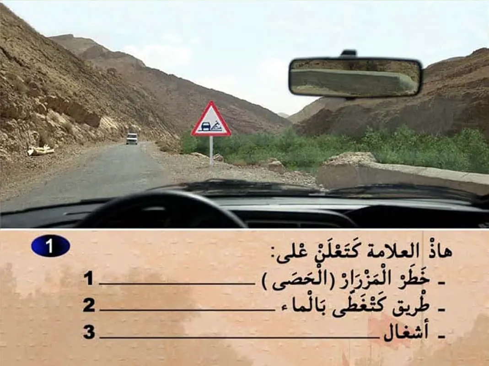
الجواب الصحيح: 1
العلامة تعني الخطر، ولا توجد علامة تدل على أنه يوجد أشغال أو مطر، لكن علامة الخطر الظاهرة تشير إلى خطر المزرار أو الحصى.
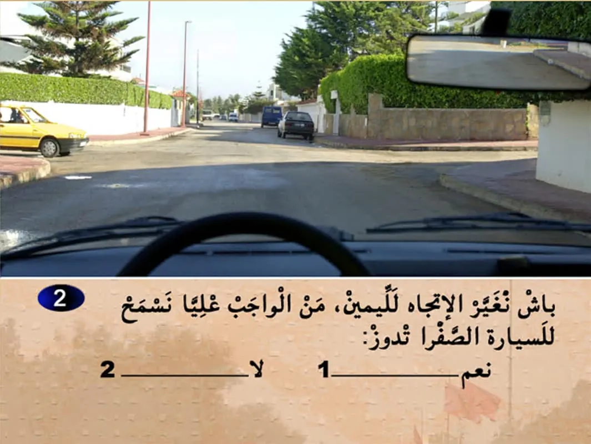
الجواب الصحيح: 2
دائما في ملتقيات الطرق، عندما لا توجد إشارات مرورية أو علامات طرقية أو شرطي ينظم حركة المرور، نلجأ في هذه الحالة للقاعدة العامة التي تقول أن الأسبقية للعربات القادمة من الجهة اليمنى. في هذه الحالة أنا أتواجد على يمين السيارة، إذا أنا من يقوم بالمرور أولا.
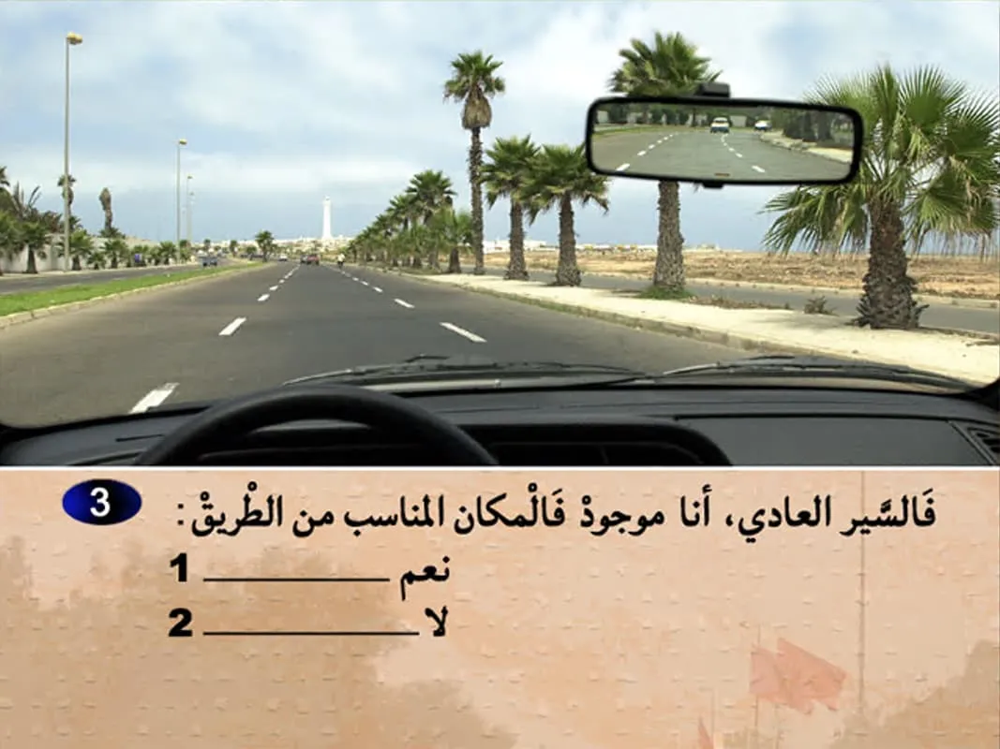
الجواب الصحيح: 2
في السير العادي أنا غير موجود في المسلك المناسب للطريق، لأن المسلك الخاص بالسير العادي هو المسلك الموجود أقصى اليمين، أنا الان أتواجد في مسلك التجاوز.
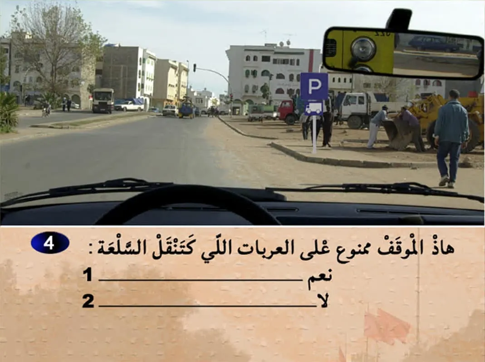
الجواب الصحيح: 2
العلامة تعني الإرشاد، وتعني أنه موقف خاص بالشاحنات وليس موقف ممنوع على الشاحنات أو العربات الثقيلة.
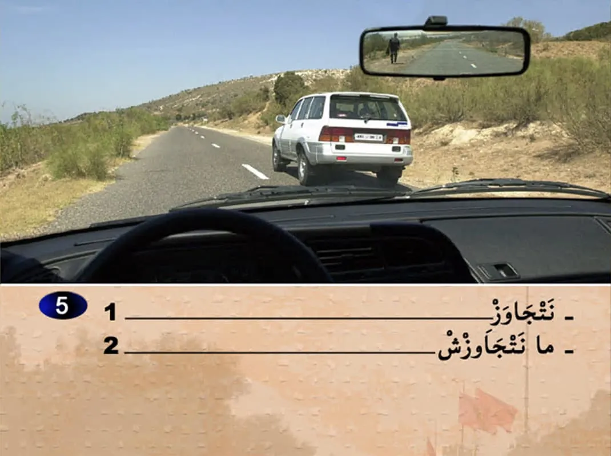
الجواب الصحيح: 1
التشور الأفقي الخط المتقطع يسمح لي بالتجاوز، ولا يوجد ما يمنعني من التجاوز، يمكنني التجاوز في هذه الحالة.
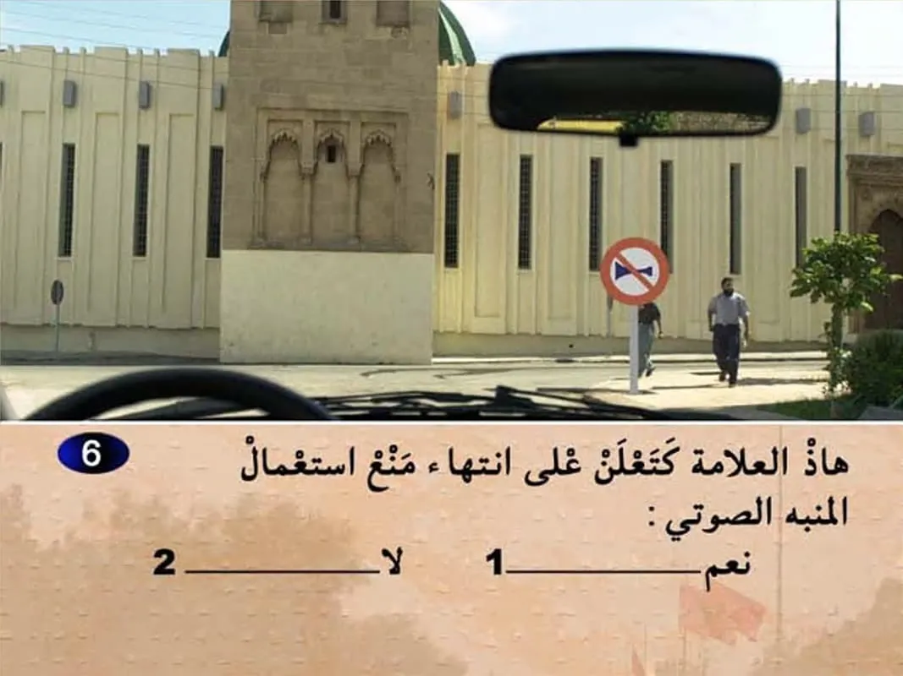
الجواب الصحيح: 2
علامة إنتهاء المنع لا تكون محاطة باللون الأحمر ولكن بلون رمادي تقريبا، في هذه الحالة العلامة تعني منع إستعمال المنبّه الصوتي وليس إنتهاء المنع.
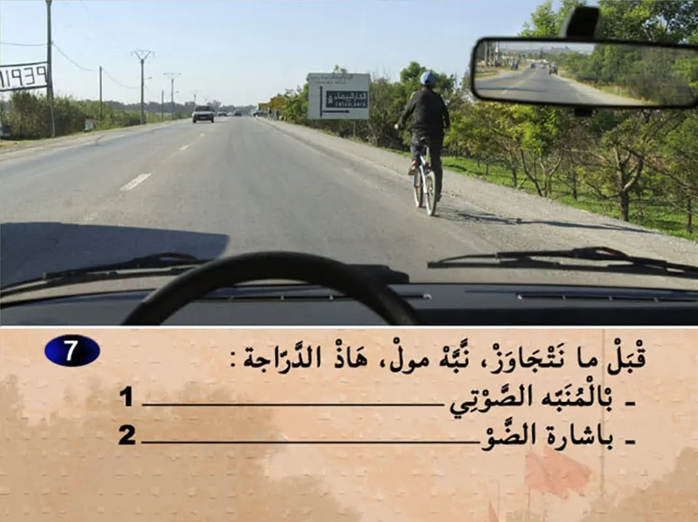
الجواب الصحيح: 1
أنا أتواجد خارج المدينة ويمكنني إستعمال المنبّه الصوتي كما أن صاحب الدراجة الهوائية لا يمكنه مشاهدة الإشارة الضوئية، لذلك أقوم بالتنبيه بالمنبّه الصوتي وليس بالإشارة الضوئية.
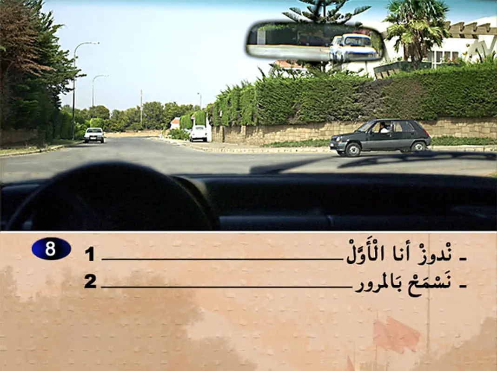
الجواب الصحيح: 2
في ملتقيات الطرق، السيارات القادمة من الجهة اليمنى لديها حق الأسبقية في المرور، في هذه الحالة يجب السماح للسيارة السوداء بالمرور.
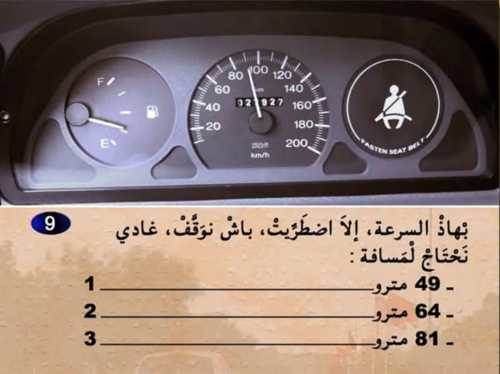
الجواب الصحيح: 3
أسير الان بسرعة 90 كلم في الساعة، ولحساب مسافة الوقوف نقوم بضرب العدد العشري في نفسه، في هذه الحالة: 9 ضرب 9 يساوي 81، إذن الإجابة الصحيحة هي رقم 3، 81 متر.
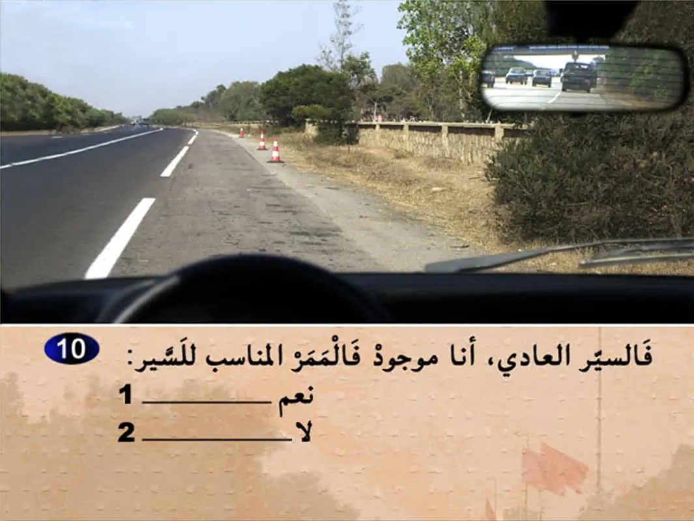
الجواب الصحيح: 2
انا الان أتواجد في مسلك الوقوف الإستعجالي، وهو خاص إذا وقع لي مشكل في السيارة أو توقفت السيارة وما إلى غير ذلك من الأمور الإستعجالية والمفاجئة، أمّا بالنسبة لمسلك السير العادي فهو الموجود على الجهة اليسرى.
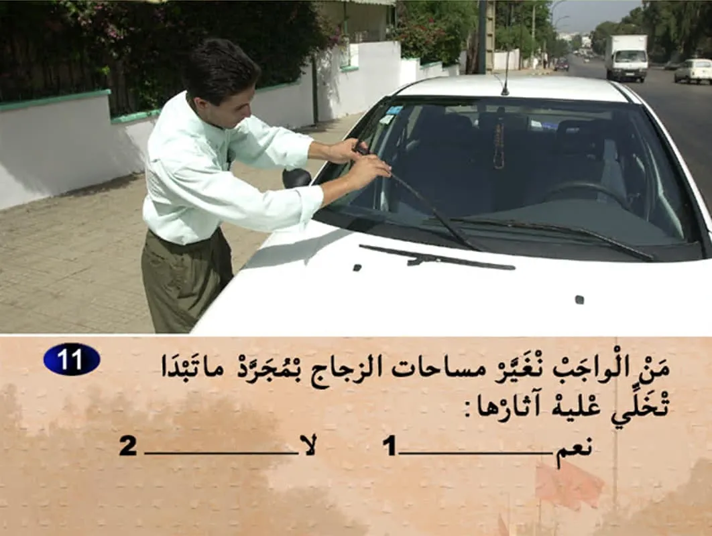
الجواب الصحيح: 1
بالنسبة لمساحات الزجاج فبمجرد بدأها بترك أثار على زجاج السيارة فيجب علي أن أقوم بتغييرها لأنها لم تعد تعمل بشكل جيد.
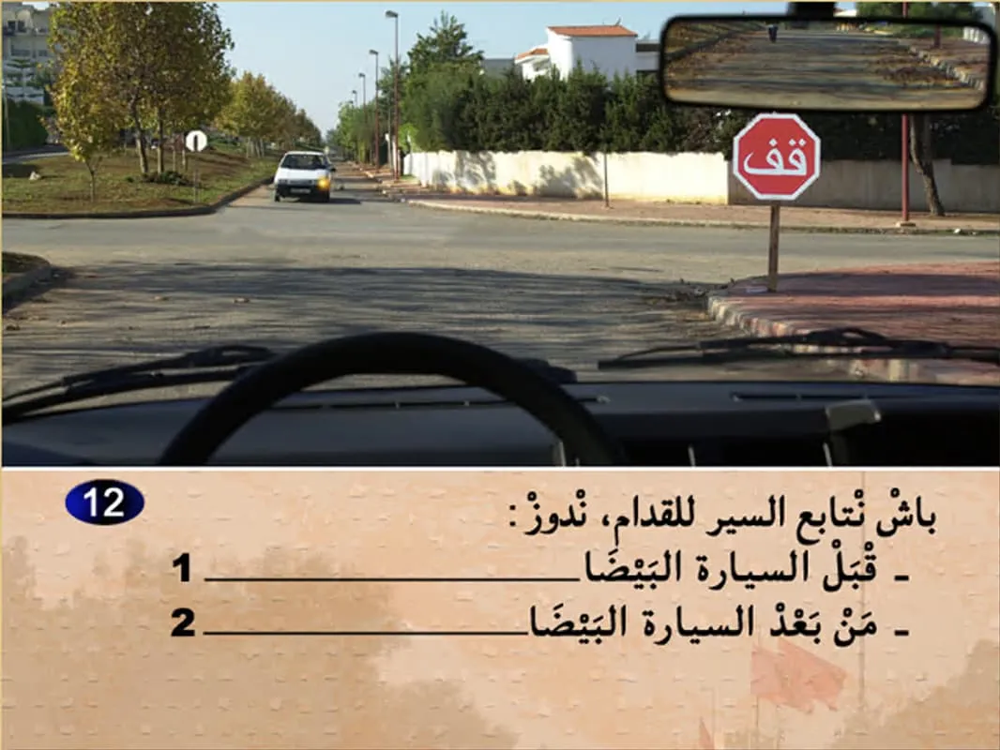
الجواب الصحيح: 1
عند وجود نفس العلامات الطرقية بالنسبة لي وبالنسبة للسيارة المقابلة في ملتقيات الطرق، فنقوم في هذه الحالة بإنهاء قاعدتها ونقوم بتطبيق القاعدة العامة والتي تقول في ملتقيات الطرق الأسبقية للسيارات القادمة من اليمين، في هذه الحالة بما أنني سوف أقوم بالسير مباشرة والسيارة البيضاء تريد تغيير الإتجاه إلى يسارها فسوف أتواجد على يمينها، إذا أنا هو الذي سوف يمّر أولا.
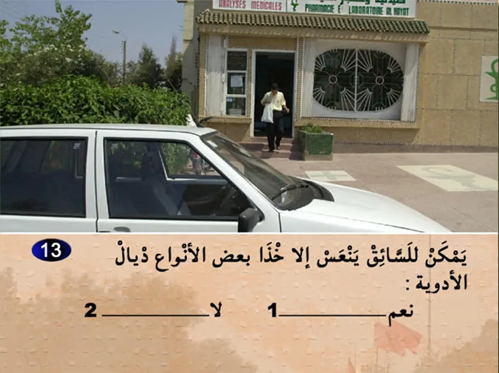
الجواب الصحيح: 1
بطبيعة الحال يوجد بعض الأدوية التي يمكن أن تسبب النوم للسائق عند تناولها، بعض الأدوية توجد فيها علامة وتحذير من تناولها إذا كنت سوف أسوق السيارة، لذلك يجب الإنتباه لنوع الأدوية التي يتناولها الشخص وهو يقود السيارة.
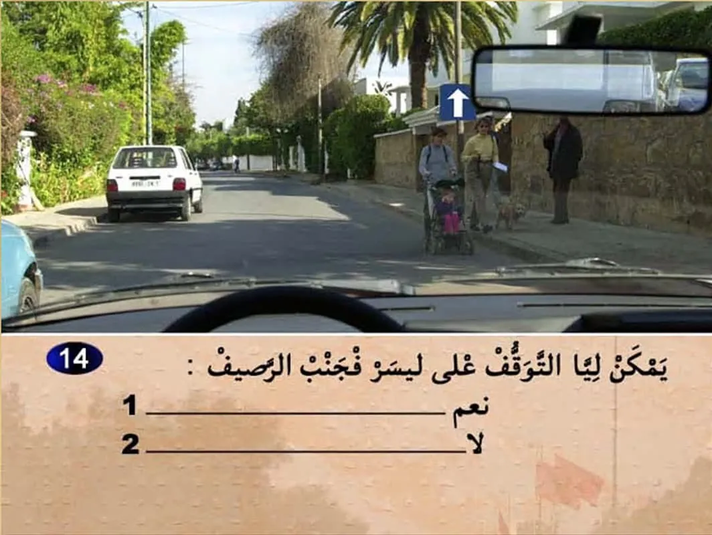
الجواب الصحيح: 1
الطريق ذات إتجاه واحد وليس ذات إتجاهين، يمكنني التوقف على الجهة السيرى، لا توجد علامة طرقية تمنعني من التوقف.
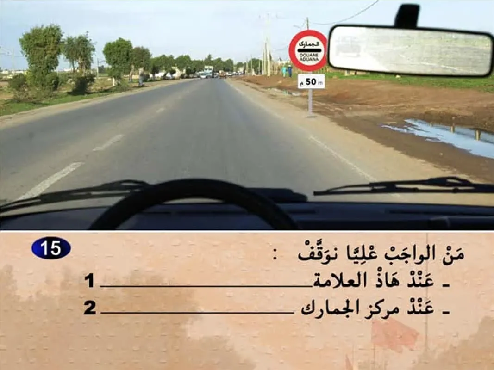
الجواب الصحيح: 2
المنع يتم تطبيقه من عند العلامة ولكن بما أنه توجد علامة تكميلية مثلا الموجود في الصورة 50 متر فتلغى القاعدة العامة، فهذا يعني أن المنع سوف يتم تطبيقه بعد مسافة 50 متر، إذن سوف أقف عند الجمارك وليس عند هذه العلامة.
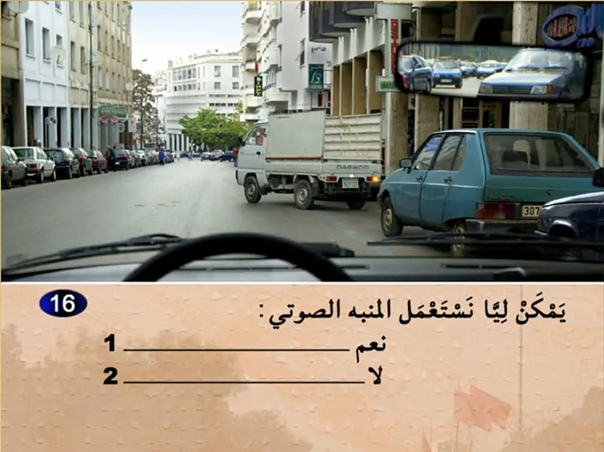
الجواب الصحيح: 2
الشاحنة تستعد للإندماج في حركة السير، ليس هنالك أي خطر يدفعني لإستعمال المنبّه الصوتي.
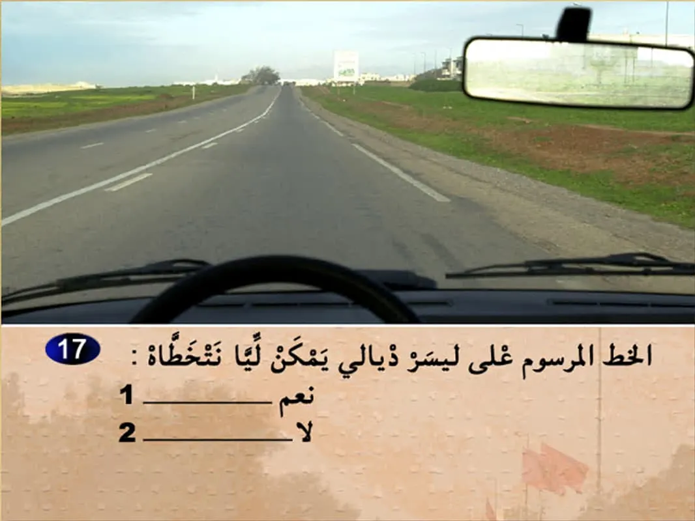
الجواب الصحيح: 1
يوجد 2 خطوط على الجهة اليسرى، ودائما الخط الذي يعنينا في مثل هذه الحالة هو أول خط، الخط الاول بالنسبة لنا هو خط متقطع وبعد ذلك يوجد خط متصل، الخط المتقطع هو الأول يعني يمكنني أن أتخطاه لا مشكلة، في بعض الحالات يوجد الخط المتصل هو الاول وبعد ذلك الخط المتقطع، في هذه الحالة لا يمكنني أن اتخطاء. دائما أرى من هو أول خط بالنسبة لي هل متقطع ام متصل.
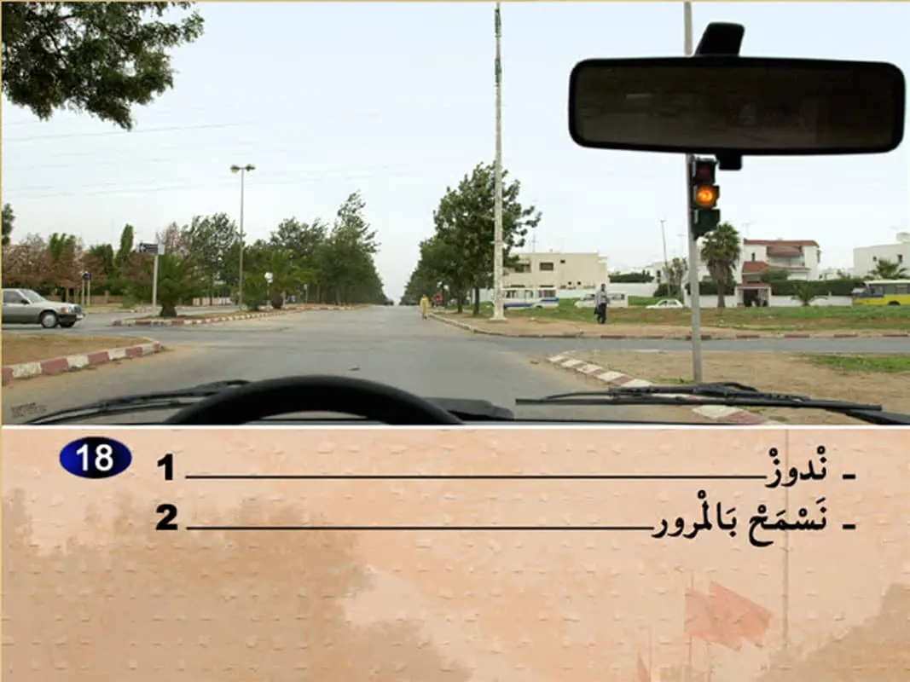
الجواب الصحيح: 1
بما ان في الإختيارات يوجد كلمة ندوز والخيار الثاني والذي هو أسمح للسيارة بالمرور ولا يوجد في الاختيارات (الوقوف او أستعد للوقوف) إذن فهذا يعني على انه الإشارة الضوئية فيها عطب ولا تشتغل. في هذه الحالة نقوم بتطبيق قاعدة ملتقيات الطّرق وهي الأسبقية للعربات القادمة من الجهة اليمنى، بما انني أتواجد على يمين السيارة الرّمادية فيجب عليها إعطائي الأسبقية بما اننا نتواجد في ملتقى طرق والاشارة الضوئية لا تعمل ولا يوجد لدي علامة قف. إذن الإجواب الصحيح هو رقم 1.
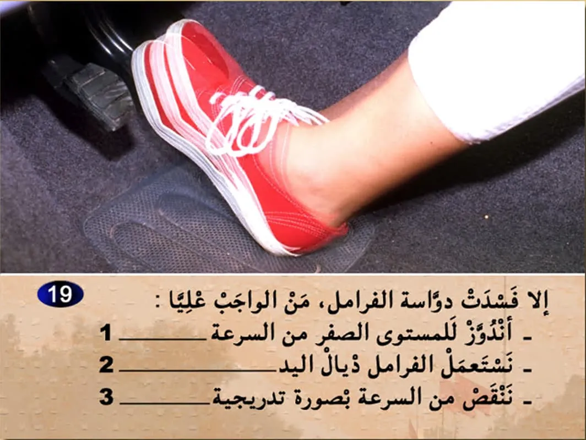
الجواب الصحيح: 2 و 3
إذا لم تعد دواسة الفرامل تعمل في هذه الحالة يتبقى لي فرامل اليد وأيظا محول السرعة. إذا قمت بتغيير السرعة إلى مستوى الصفر فسوف أفقد السيطرة على السيارة، لذلك من الواجب عليّ في هذه الحالة إستعمال فرامل اليد وأيظا أقوم بإنقاص السرعة بصورة تدريجية.
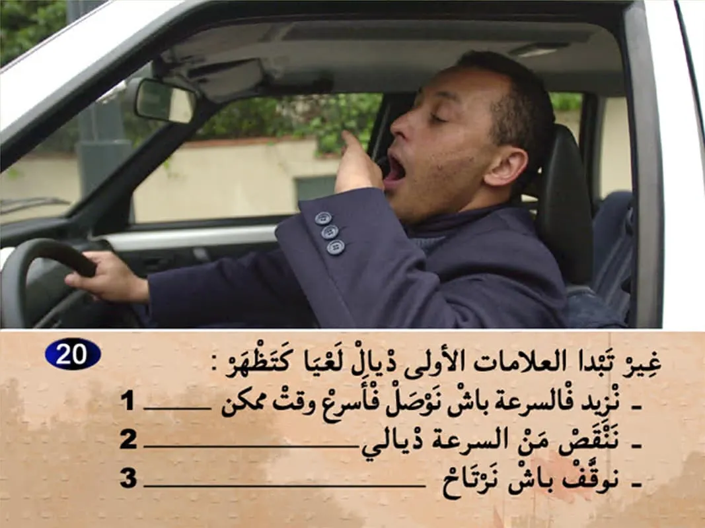
الجواب الصحيح: 3
لا يوجد شيئ في قانون السياقة يقول أقوم بالسياقة بسرعة لكي أصل بسرعة، في مثل هذه الحالات التي يوجد فيها تعب أو شعور بالتعب فمن الواجب أن أقوم بالوقوف لأخد قسط من الراحة وبعد ذلك أكمل الطريق. (القانون يقول أنه بعد كل ساعتين من السياقة يجب أخد 15 دقيقة قسط من الراحة).
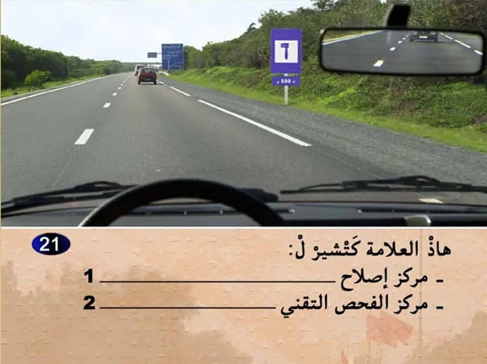
الجواب الصحيح: 1
العلامة الطرقية تعني أنه بعد مسافة 500 متر سوف نجد مركز إصلاح.
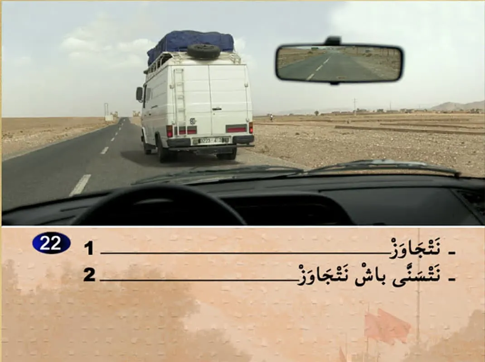
الجواب الصحيح: 1
لا توجد علامة طرقية تمنعني من التجاوز، لا توجد سيارات تستعد للتجاوز قادمة من الخلف والخط المتقطع يسمح لي بالتجاوز ولا يوجد سيارة قادمة في الإتجاه المعاكس، لذلك يمكنني التجاوز.
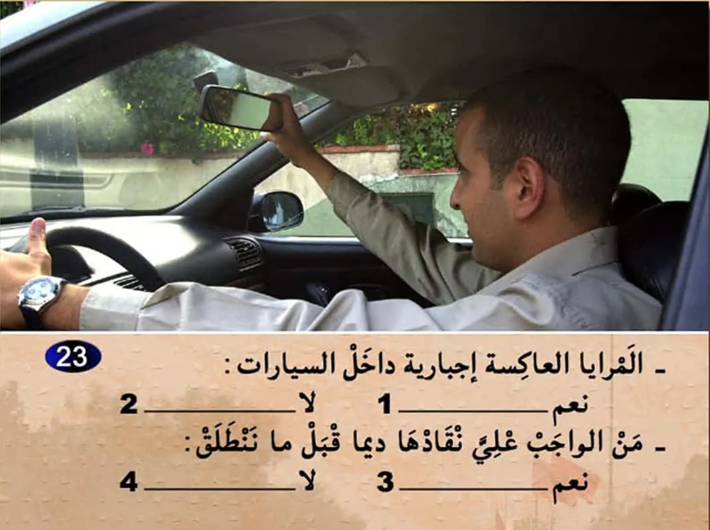
الجواب الصحيح: 1 و 3
بالنسبة للسيارات العادية فالمراة العاكسة ضرورية داخل السيارة، لمشاهدة السيارات القادمة من الخلف مثلا، ويجب قبل الأنطلاق التأكد منها.
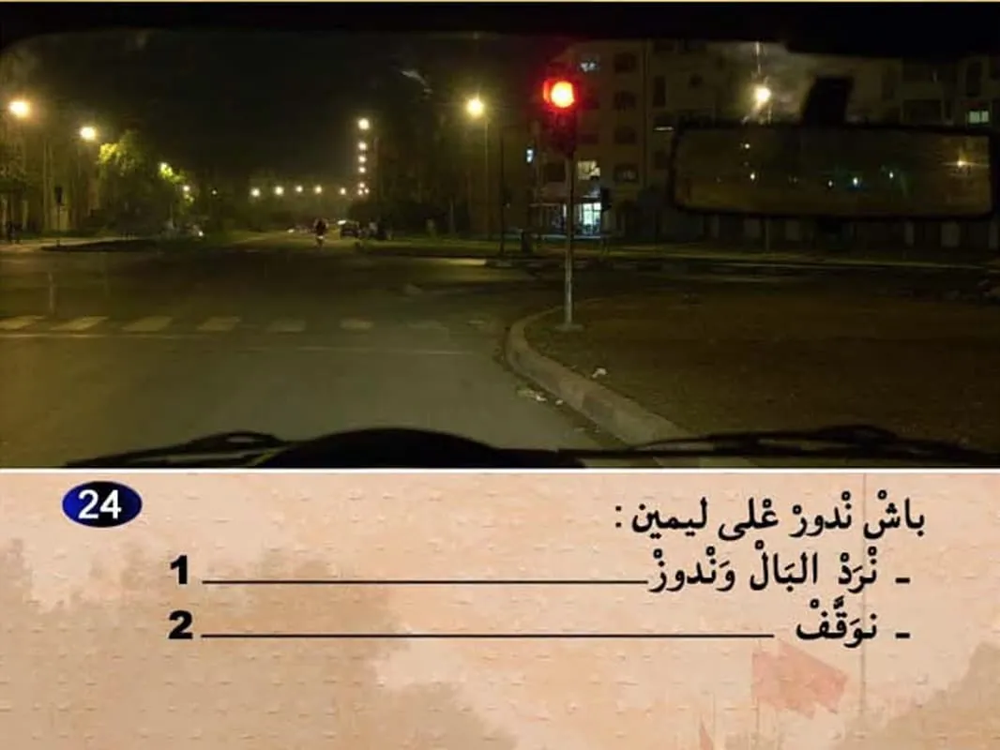
الجواب الصحيح: 2
يوجد إشارة ضوئية باللون الأحمر تجبرني على الوقوف، بعد أن يشتغل الضوء الأخضر أنتبه وأقوم بالمرور.
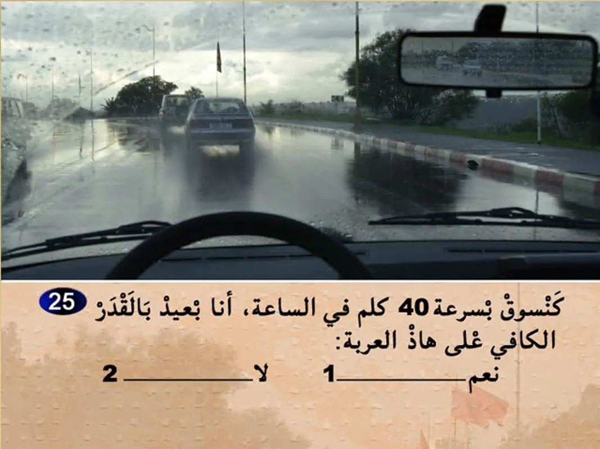
الجواب الصحيح: 2
في وجود مطر أو ثلج أو ضباب (حالة الجو سيئة) يجب أن أزيد في مسافة الامان وليس الإنقاص منها، في هذه الحالة لست بعيد بالقدر الكافي عن هذه السيارة.
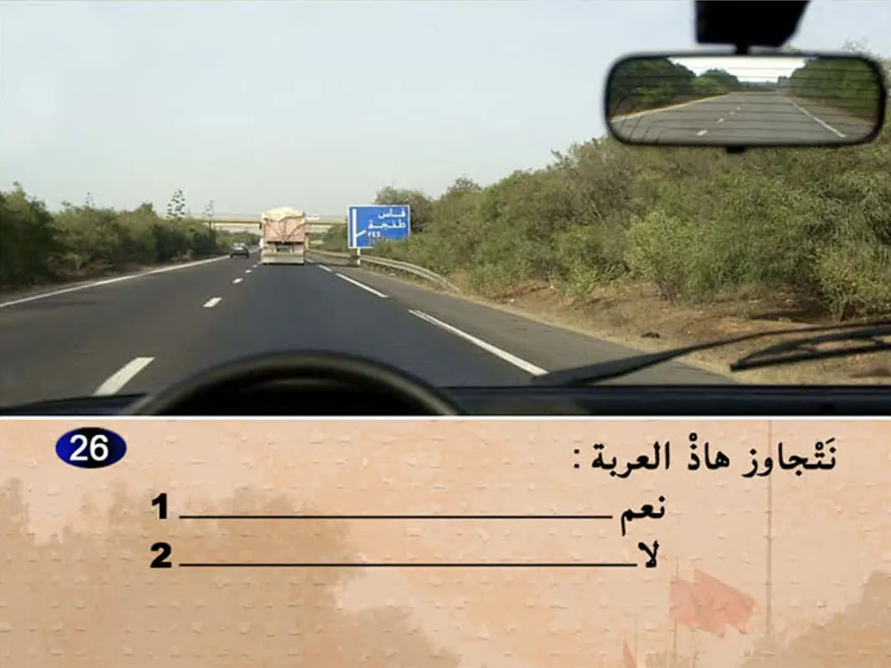
الجواب الصحيح: 1
الخط المتّصل الموجود أقصى السيار يعني أن الطريق ذات إتجاه واحد، لا توجد سيارة تستعد لتجاوزي من الخلف، كما ان التشوير الأفقي الخط المتقطع يسمح لي بالتجاوز. إذا يمكنني التجاوز بدون مشكلة.
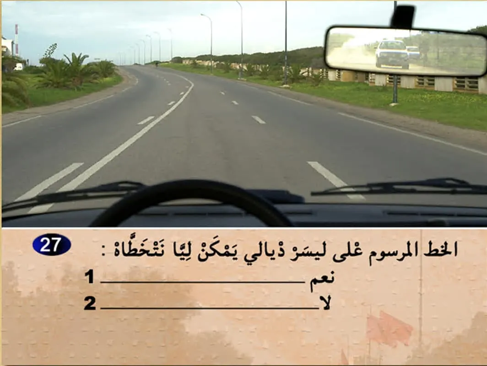
الجواب الصحيح: 2
أول خط موجود على يساري هو خط متصل ولا يمكنني أن أتخطّاه ( عكس السؤال 17).
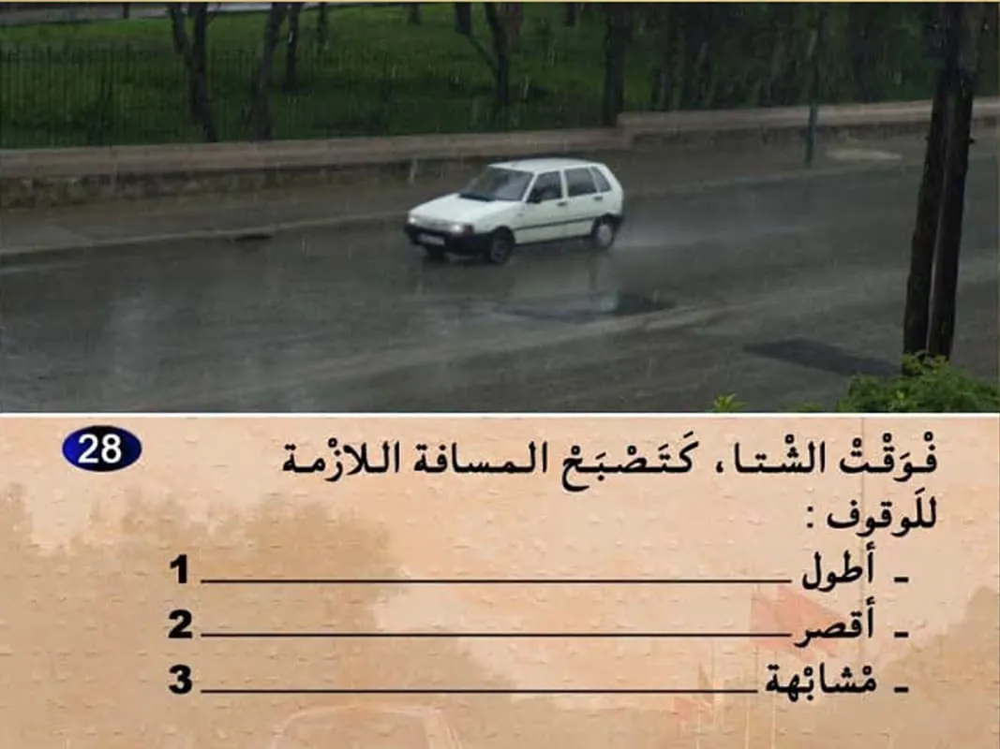
الجواب الصحيح: 1
في وجود المطر فمسافة الأمان أو الوقوف تصبح أطول.
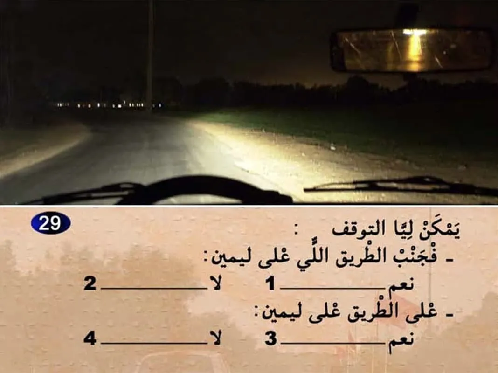
الجواب الصحيح: 1 و 4
يجب الإنتباه لمثل هذه الأسئلة الفخ. بالنسبة بهذا السؤال فمصطلح على الطريق يقصدون به وسط الطريق، وجنب الطريق هو جانب الطريق. إذا يمكنني التوقف في جانب الطريق لا مشكلة لانه لا توجد علامة طرقية تمنعني من ذلك لكن لا يمكنني الوقوف على الطريق أي وسط الطريق.
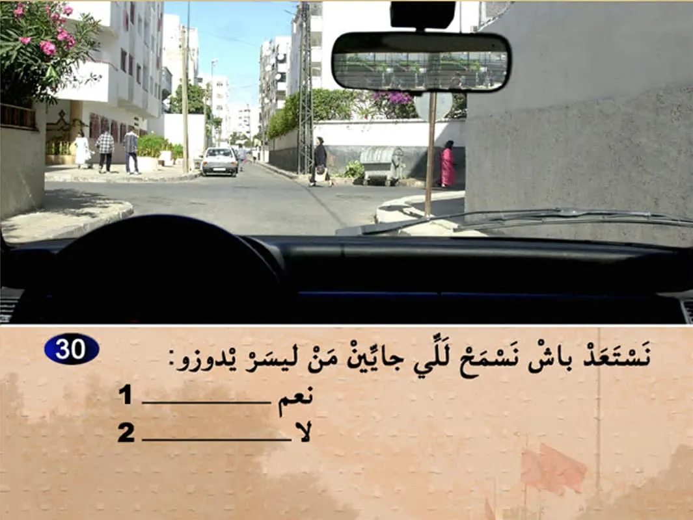
الجواب الصحيح: 2
في ملتقيات الطرق، السيارات القادمة من الجهة اليمنى لديها الأسبقية في المرور، وليس السيارات القادمة من الجهة اليسرى. لذلك أسمح للسيارات القادمة من اليمين من المرور وليس القادمة من اليسار.
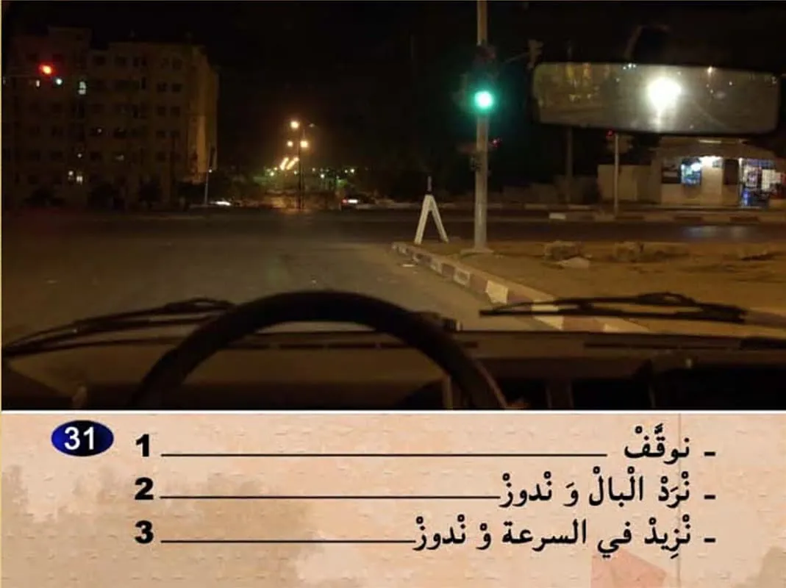
الجواب الصحيح: 2
الإشارة الضوئية باللون الأخضر تسمح لي بالمرور وبما اننا نتواجد في ملتقى الطرق وفي الليل فيجب علينا الإنتباه والمرور.
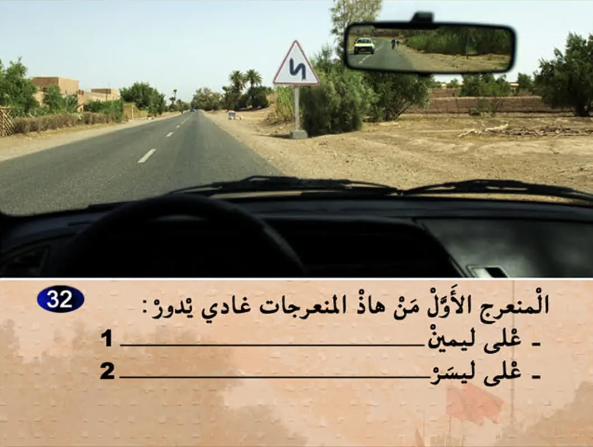
الجواب الصحيح: 2
الإشارة الطرقية تعني أن المنعرج سوف ينحرف إلى الجهة اليسرى. (بالنسبة للأشخاص اللذين يجدون صعوبة في مثل هذا السؤال أو أسئلة المنعرجات فهي سهلة فقط إستعمل يديك، في العلامة الطرقية أول منعرج سوف يتجه إلى يدي اليسار إذن على اليسار.)
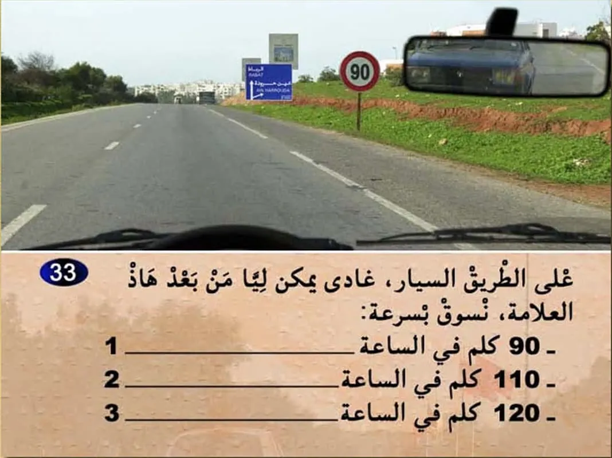
الجواب الصحيح: 1
العلامة الطرقية تعني المنع، وهي تجبرني بالسير بسرعة 90 كلم في الساعة كحد أقصى.
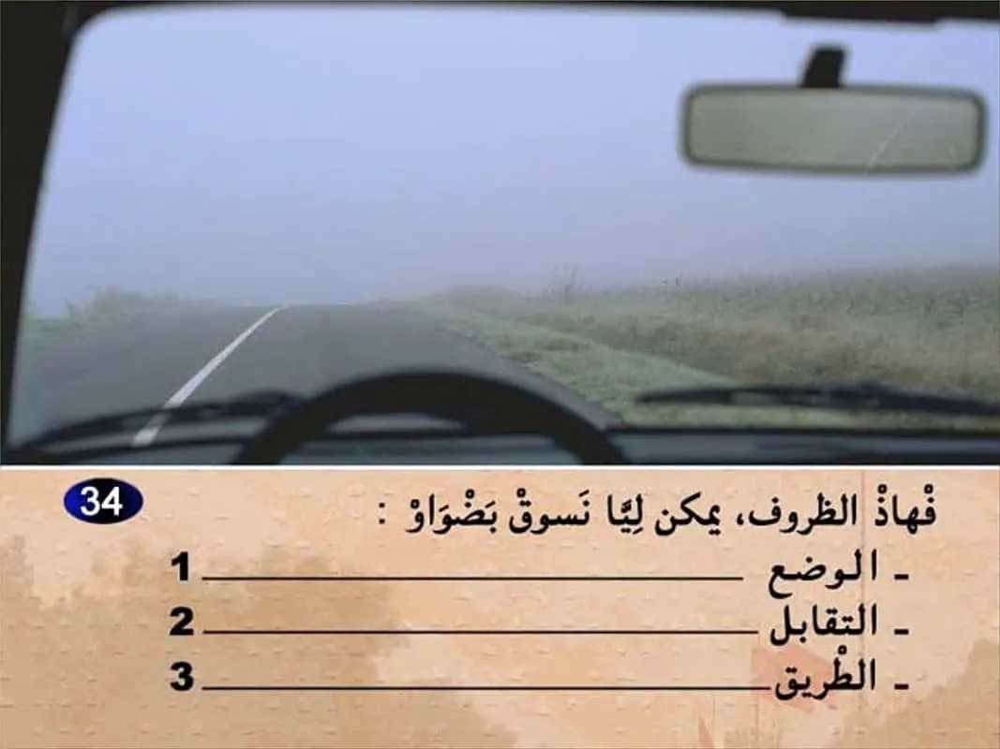
الجواب الصحيح: 1 و 2
كما نلاحظ في هذه الحالة فيوجد ضباب، عند وجود ضباب فنقوم بإستعمال أضواء الضباب الخلفية والأمامية وأضواء التقابل، بالاضافة لإمكانية إستعمال أضواء الوضع مع أضواء التقابل او الضبابة، وبما انه لا يوجد أضواء الضبابة ضمن الإختيارات التي في السؤال فنقوم بإختيار أضواء التقابل وأضواء الوضع. أضواء الطريق (الضوء العالي) كتعكس الضباب وكترجع الضوء لعينيك، الشي اللي كينقص من الرؤية.
⚠️ ملاحظة: يمكن استعمال أضواء الوضع في آن واحد مع أضواء الطريق وأضواء التقابل والأضواء الخاصة بالضباب، ويمكن كذلك استعمالها وحدها عند وقوف المركبة أو توقفها أو عندما تكون ظروف الإنارة على الطرق، ماعدا الطريق السيار أو الطرق ذات المسالك الخاصة. الجواب الصحيح هو رقم 1 و 2.
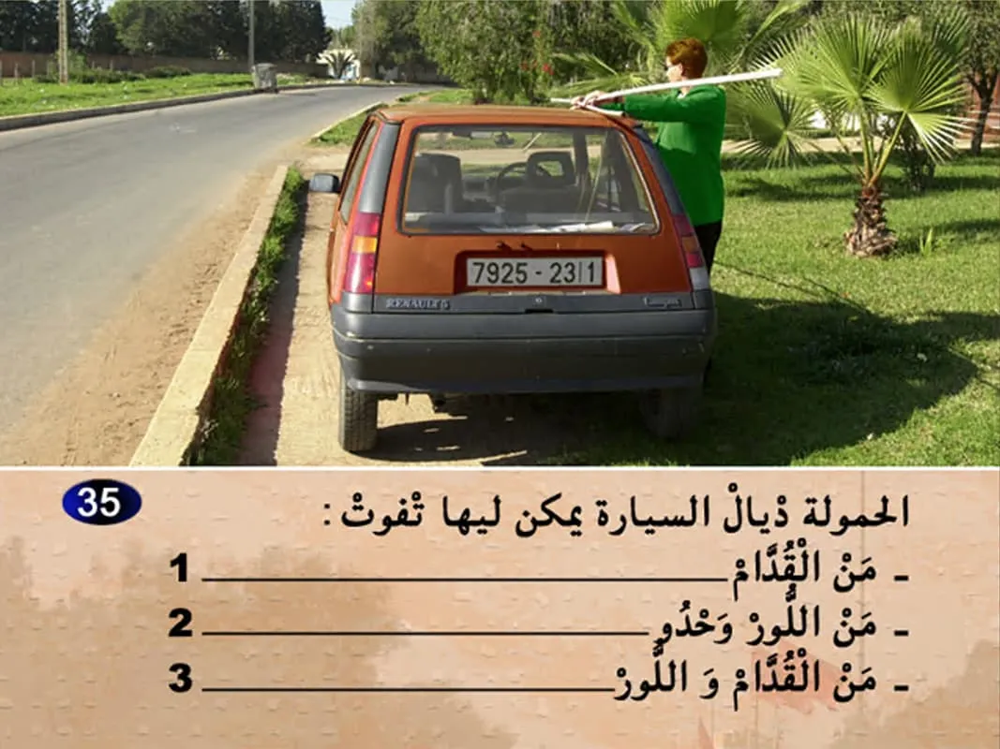
الجواب الصحيح: 2
بالنسبة للحمولة التي نقوم بوضعها فوق السيارة فيمكن أن تتجاوز من الخلف فقط، ولا يمكنها أن تتجاوز مقدمة السيارة.
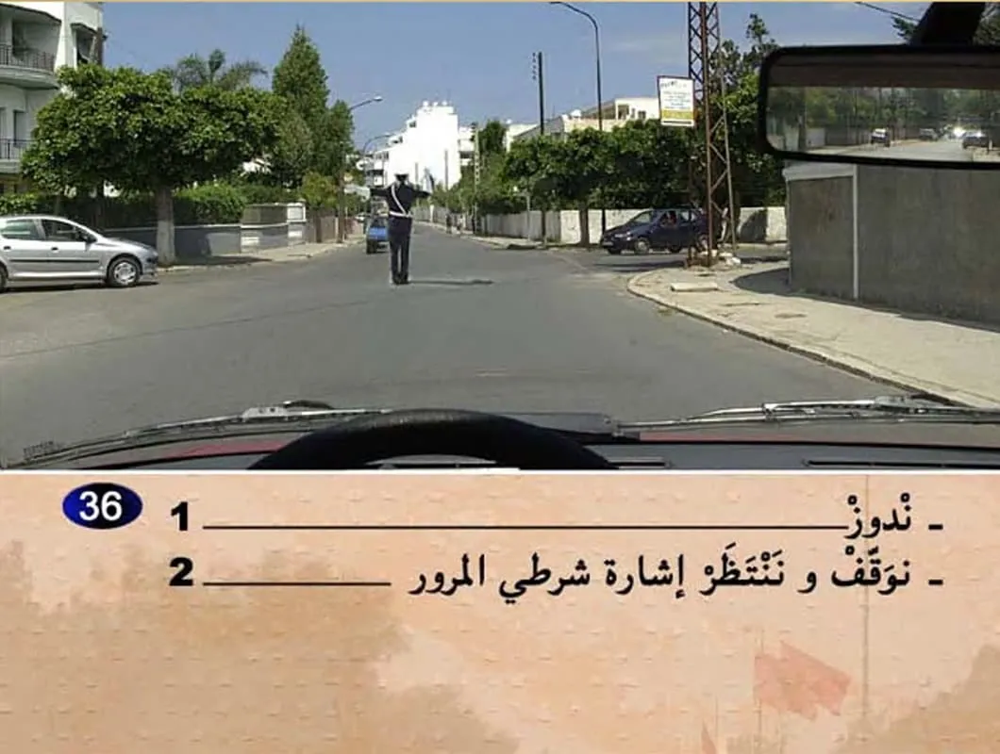
الجواب الصحيح: 2
شرطي المرور عندما يكون مقابل لنا أو يكون من الخلف فهذا يعني الوقوف، إذا أقف وأنتظر إشارة السماح بالمرور من الشرطي.
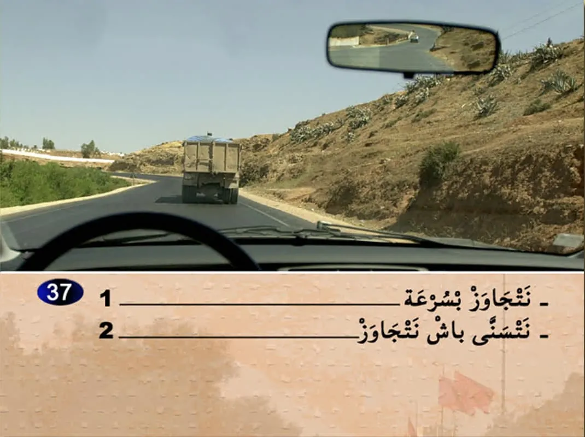
الجواب الصحيح: 2
يوجد منعرج وإنعدام الرؤية في المنعرج، يجب الإنتظار والتجاوز بعد ذلك.
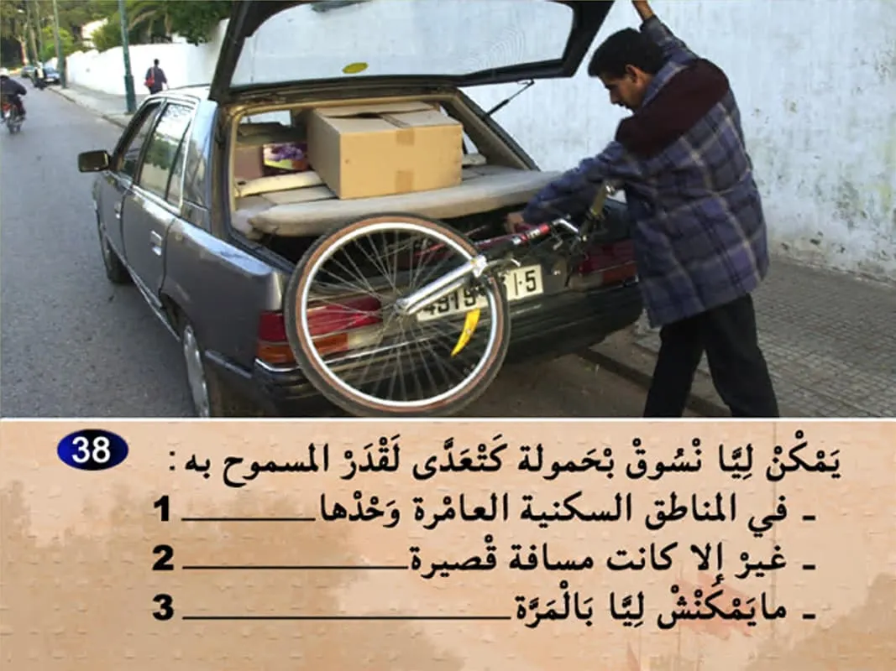
الجواب الصحيح: 3
القانون يتم تطبيقه في أي مكان ووقت، في هذه الحالة القانون يقول أنه لا يمكن لي أن أسوق سيارة بحمولة تتعدى القدر المسموح لها به.
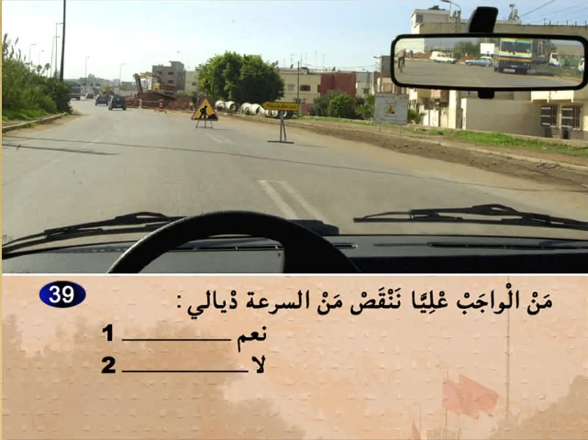
الجواب الصحيح: 1
العلامة الطرقية تعني أشغال، يجب أن أنتبه وأخفف من السرعة وأقوم بالمرور.
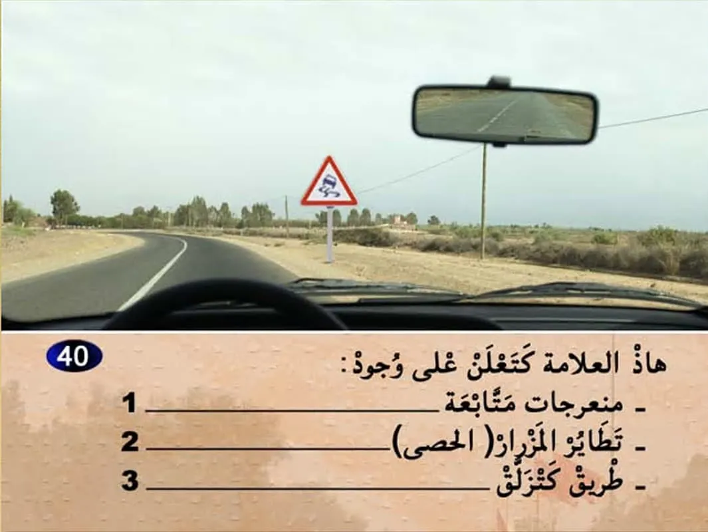
الجواب الصحيح: 3
العلامة الطرقية تعني أن الطريق منزلقة.